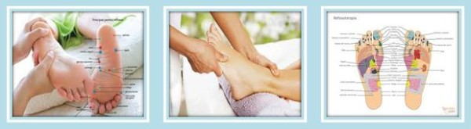

Reflexologia podal a domicilio o en consulta
La reflexología es la terapia de tratamiento basada en el principio de que hay zonas reflejas en pies , que se corresponden con todas las glándulas, órganos y partes del cuerpo. La reflexología emplea un método singular en el que se usan el pulgar y los dedos para aplicar presiones específicas a estos puntos reflejos y lograr así numerosos beneficios terapéuticos.
El reflexólogo trabaja cada reflejo, desencadenando con ello una liberación del estrés y la tensión en la zona correspondiente del cuerpo, así como una respuesta general de relajación.
La liberación de la tensión desbloquea los impulsos nerviosos y mejora el suministro sanguíneo a todas las partes del cuerpo. Ya que la reflexología trabaja desde dentro, también tiene un efecto equilibrador sobre cada glándula, órgano y región del cuerpo. Habitualmente, los clientes expresan alivio de la tensión y el dolor, una mayor sensación de bienestar y el aumento de su energía.
Beneficios de la reflexologia podal
Los efectos generales son: estimular el sistema nervioso, circulatorio y glandular influyendo en el sistema de defensa del organismo. El masaje libera las materias de deshechos eliminándolas por las glandulas excretoras recuperando de esta manera su equilibrio energético e induciendo a un estado de relajación.